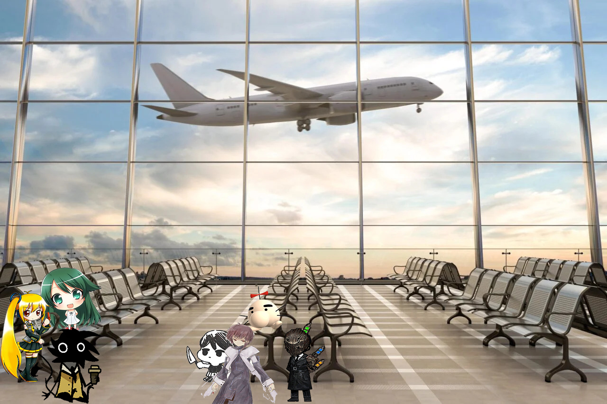

I
La música de los altavoces del aeropuerto privado de LSDC Japón resonaba en los pasillos.
Solo Aze podía hacernos ir a un lugar liminal y dejarnos esperando con música que según las pantallas era de un "autor desconocido".
De todas maneras, estábamos cómodos con eso.
"Chicos, el vuelo ya llegó. Espero que disfruten el viaje."
Tras escuchar el walkie-talkie de 500km que compramos por si las dudas para comunicarnos con el admin; Maris, Nora y yo cerramos nuestras teorías de por qué nos habria convocado a un viaje de 'negocios', mientras que los demás terminaron de ver un tiktok de JoJo's y recién entonces se levantaron.
Trajimos nuestras cosas y a pesar de que habian grandes aviones comerciales reservados para nosotros, nuestro vuelo era en en helicoptero.